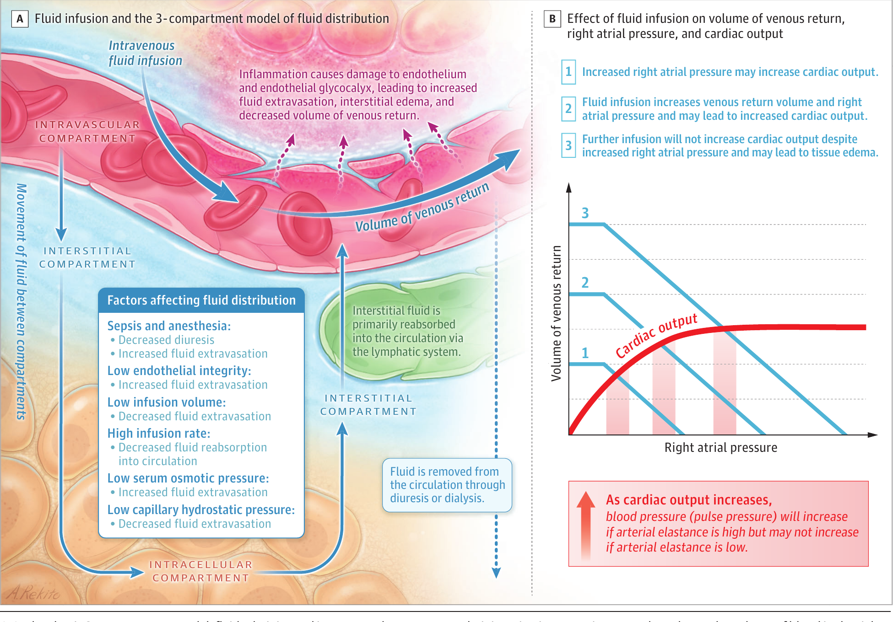
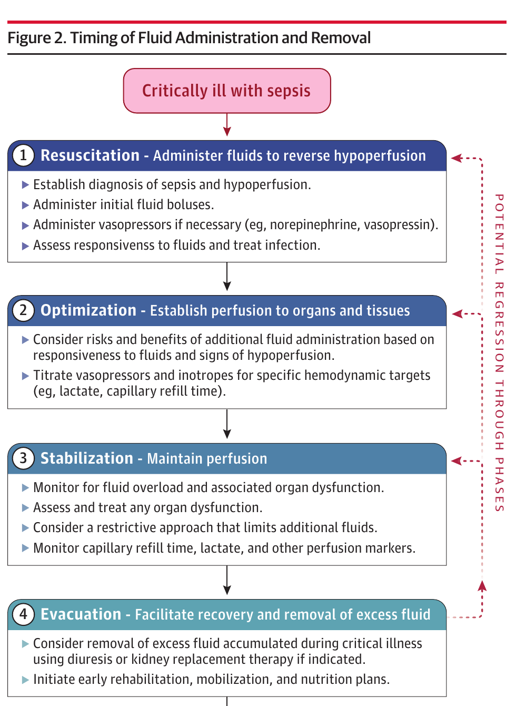

本ページで使用する略語一覧
| CO | Cardiac Output — 心拍出量 |
| SV | Stroke Volume — 一回拍出量 |
| MAP | Mean Arterial Pressure — 平均動脈圧 |
| CVP | Central Venous Pressure — 中心静脈圧 |
| PAOP | Pulmonary Artery Occlusion Pressure — 肺動脈閉塞圧 |
| PPV | Pulse Pressure Variation — 脈圧変動 |
| SVV | Stroke Volume Variation — 一回拍出量変動 |
| PLR | Passive Leg Raising — 受動的下肢挙上テスト |
| EEO | End-Expiratory Occlusion — 呼気終末閉塞テスト |
| VTI | Velocity Time Integral — 速度時間積分（SVの推定） |
| POCUS | Point-Of-Care Ultrasonography — ポイントオブケア超音波 |
| IVC | Inferior Vena Cava — 下大静脈 |
| VExUS | Venous Excess Ultrasound — 静脈うっ血超音波スコア |
| ScvO₂ | Central Venous Oxygen Saturation — 中心静脈血酸素飽和度 |
| CRT | Capillary Refill Time — 毛細血管再充満時間 |
| EGDT | Early Goal-Directed Therapy — 早期目標指向型治療 |
| KRT | Kidney Replacement Therapy — 腎代替療法（透析） |
| AKI | Acute Kidney Injury — 急性腎障害 |
| ARDS | Acute Respiratory Distress Syndrome — 急性呼吸窮迫症候群 |
| HES | Hydroxyethyl Starch — ヒドロキシエチルデンプン（半合成膠質液） |
| RCT | Randomized Clinical Trial — ランダム化比較試験 |
| RR / OR / HR | Relative Risk / Odds Ratio / Hazard Ratio — 相対リスク／オッズ比／ハザード比 |
| CI | Confidence Interval — 信頼区間 |
| LR+ / LR− | Positive / Negative Likelihood Ratio — 陽性／陰性尤度比 |
SECTION 1 なぜ輸液か — 敗血症で破綻する循環生理
敗血症は「静脈還流」を奪う病態
ICU入室患者のおよそ20〜30%が敗血症であり、そのうち約25〜40%が退院前に死亡する。輸液は敗血症治療の重要な構成要素であり、ICU入室前・入室中・入室後のいずれの時期にも投与されうる。
血管内容量・静脈還流・心拍出量・組織灌流を保つ複数の生理経路が敗血症で破綻する。体液喪失に加え、静脈コンプライアンスの増大と静脈抵抗の低下が重なり、有効血管内容量が減少する。これが静脈還流・心拍出量・組織灌流を低下させる。
静脈内（IV）輸液は、血管内の血液量・心臓へ戻る静脈血量・心拍出量・組織への酸素運搬量を増やしうる。ただし輸液後に動脈圧が上がるかは動脈エラスタンスに依存する。動脈が硬く伸展性が低い（高エラスタンス）ほど同じボーラスで血圧は大きく上がり、柔らかく伸展性が高いと血圧は上がりにくい。＝輸液は血圧を上げずに心拍出量だけ増やすことがある。
SECTION 2 輸液の分布 — 3コンパートメントモデルとグリコカリックス
投与した輸液はどこへ行くか（Figure 1A）
投与された輸液はまず血管内（intravascular）に分布し、その後に間質（interstitial）・細胞内（intracellular）へ移動する。間質へ流入した輸液は主にリンパ系を介して循環へ再吸収される。血清膠質浸透圧・内皮の健全性・毛細血管静水圧・輸液の速度と量などが分布を左右する。
初期輸液では血行動態の改善（心拍出量の増加・動脈圧の上昇・組織灌流の改善）が得られうるが、過剰輸液は輸液の血管外漏出と間質浮腫を引き起こす。とくに敗血症では、血管内皮と内皮グリコカリックスの障害により漏出が増えやすい。静脈圧上昇による組織浮腫は臓器障害と関連し、腹腔内圧上昇やコンパートメント症候群などの合併症を招きうる。
Frank-Starling曲線で考える（Figure 1B）
輸液で血管内容量が増えると右室の血液量が増える。心臓が曲線の上行脚にあれば、心室充満の増加で心拍出量が増える。一方、曲線のより右側（プラトー）にあると、それ以上の輸液では右房圧だけ上がって心拍出量は増えず、組織浮腫を招きうる。心拍出量の増加が動脈圧上昇に結びつくかは、前述のとおり動脈エラスタンス（cardiac/arterial elastance）に依存する。
Figure 1 ｜ 輸液の生理 — 3コンパートメントとFrank-Starling

A：輸液は血漿→間質→細胞内へ分布し、間質液は主にリンパ系で循環へ戻る。敗血症は内皮・グリコカリックスを傷害し、漏出と間質浮腫を増やす。B：Frank-Starling曲線。上行脚では心室充満の増加で心拍出量が増えるが、プラトーでは増えず、血圧上昇は動脈エラスタンスに依存する。
SECTION 3 輸液の4つの使い方
重症患者は主に4つの形態でIV輸液を受ける。最後の「希釈・薬剤キャリア」が、意図しない輸液蓄積（fluid creep）の主因になりやすい点が臨床的に重要である。
| 形態 | 定義・目的 |
|---|---|
| 輸液チャレンジ fluid challenge | 少量（例 250 mL）を短時間（例 10分）で投与し、心拍出量・心拍数・血圧・尿量などの生理学的反応を評価するのが目的。 |
| 輸液ボーラス fluid bolus | より多い量（例 500〜1000 mL）を短時間（例 15分）で投与し、血管内容量を増やすのが目的。 |
| 維持・補充輸液 maintenance / replacement | 低速で長時間（数時間〜数日）投与し、水・電解質・栄養の日々の必要量と、実測された喪失（尿・消化管・ドレーン）を補う。 |
| 薬剤希釈・キャリア diluent / carrier | 薬剤投与を成立させるための輸液。重症患者ではこの量が相当に多く、輸液蓄積の見落とされがちな原因。 |
SUMMARY第1章のキーメッセージ
SECTION 1 評価の総論 — 低灌流所見は「輸液の適応」ではない
輸液投与が適応かを判断するには、病歴・身体所見・検査・画像（肺水腫評価の胸部X線、ショックの原因評価のPOCUS）を統合する必要がある。重要なのは、意識変容・低血圧・皮膚網状化（mottling）・CRT延長・尿量低下・乳酸上昇といった低灌流マーカーは「低容量」に特異的ではないこと。これらは患者の臨床的文脈の中で解釈すべきで、単独で輸液の適応とはならない。
SECTION 2 輸液反応性の評価（Table 1）
「反応する人／しない人」を、輸液する前に見分ける
輸液反応性の評価は、ボーラスで一回拍出量（と心拍出量）が増えると予想される患者（fluid responsive）と、増えないと予想される患者（fluid nonresponsive）を投与前に区別する試み。敗血症患者のうち、来院時に輸液反応性があるのは約57%にとどまる。
PLR（受動的下肢挙上）やPPV（脈圧変動）などの動的指標は、CVPのような静的指標より正確に反応性を判別する。ただし反応性の有無は、低灌流がない状況では「輸液が必要」という独立したマーカーにはならない点に注意。
ある敗血症患者の割合
（95%CI 7.6–17・特異度92%）
（95%CI 0.07–0.22・感度88%）
各指標の性能と「効かない条件」
| 指標 | 性能・閾値 | 偽陽性・偽陰性となる条件 |
|---|---|---|
| CVP / PAOP 静的指標 | CVP正常 5–10 cmH₂O、PAOP 4–12 cmH₂O。低値は反応性を示唆するが… | 単独・静的な値だけでは反応性を反映しない。臨床情報と統合が必須。 |
| PPV 脈圧変動 | 正常10–15%。>10–12%で感度88%・特異度89%。陽圧換気が前提。 | 自発呼吸・不整脈・腹腔内圧上昇・右室不全（偽陽性）／低一回換気量・低コンプライアンス（偽陰性）。 |
| SVV 一回拍出量変動 | 正常10–13%。>12%で反応性を予測。性能はPPVと同等。 | PPVと同様（自発呼吸・不整脈・腹腔内圧上昇・右室不全・低換気量）。 |
| EEO テスト 呼気終末閉塞 | 約15秒の呼気終末閉塞で脈圧変化>5% → 感度87%・特異度100%。侵襲的人工換気が必要。 | 自発呼吸で15秒閉塞ができない／低換気量・低コンプライアンス（偽陰性）。 |
| PLR 受動的下肢挙上 | 半臥位→仰臥位＋両下肢30–45°挙上で約300 mLの自己輸血。ΔSV>9%・ΔPP>10%で統合感度85%・特異度91%。人工換気を要さない。 | 高度低容量・腹腔内圧上昇（偽陰性）／脊髄損傷等で体位変換不能／弾性ストッキング併用で減弱／手技・心拍出量測定の正確性に依存。 |
| ミニ輸液チャレンジ mini fluid challenge | 約100 mLを1分で急速投与し、その後400 mLを14分で。ΔVTI>10% → 感度95%・特異度78%。人工換気不要。 | 検証が十分でない／ボーラス投与が必要／リアルタイムのVTI測定にPOCUSが必要。 |
SECTION 3 POCUS（ポイントオブケア超音波）の役割
POCUSはショックの原因評価と輸液反応性予測の両方に有用な汎用ツール。心機能の反復評価、前負荷反応性の評価（PLR時のSV変化）、輸液蓄積の合併症評価（投与前の肺水腫＝Bラインの確認）ができる。
IVC径に加え、肝・腎の静脈血流パターン（VExUSの考え方）を組み合わせると、組織浮腫を捉え、輸液を続けるか差し控えるかの判断材料になる。異常な血流パターンは、単純な輸液蓄積と、全身静脈圧上昇による臓器障害とを区別しうる。
SECTION 4 輸液療法のゴール（Table 2）
単一の目標では不十分 — 複数指標を組み合わせる
血圧の正常化はもはや十分な蘇生目標ではない。CRTの正常化・乳酸クリアランス・尿量の正常化など、患者ごとに複数の治療目標を選ぶ。各指標は単独では限界があり、文脈の中で統合する。
| 指標 | 正常値 | コメント（限界・エビデンス） |
|---|---|---|
| 心拍数 | 60–100/分 | 頻脈は発熱など低容量以外でも起こり、β遮断薬下では低容量でも起こらない。多くの患者で単独の指標としては不十分。 |
| 平均動脈圧（MAP） | 70–100 mmHg | 多くの敗血症成人でMAP ≥65 mmHgの維持が推奨。低MAPは「輸液で心拍出量が増える患者」を正確には同定しない。 |
| 心拍出量（CO） | 5–6 L/分 | 絶対値より酸素需給バランスが重要。COを増やしても転帰が改善するとRCTは示していない。微小循環障害があれば十分なCOでも灌流は不十分。 |
| ScvO₂ | 70–80% | 中心静脈カテーテルが必要。低値は酸素運搬不足、高値は酸素抽出障害を示唆。ScvO₂を指標にした治療で転帰改善は示されていない。 |
| CVP | 5–10 cmH₂O | 右房圧・前負荷の代用とされてきたが、輸液でCOが増える患者を正確には同定しない。CVP指標の輸液療法で転帰改善なし。 |
| 尿量 | 0.5–1.5 mL/kg/時 | 腎灌流の代用だが、微小循環変化や急性尿細管壊死など腎灌流以外にも影響される。COと臓器灌流が増えても尿量が増えないことがある。 |
| 血中乳酸 | 1–2 mmol/L | 酸素運搬が十分でも上昇しうる。乳酸低下は良好な転帰の患者を同定するが、乳酸クリアランスを指標にした蘇生で転帰改善は示されていない。 |
| CRT 毛細血管再充満時間 | ≤3秒 | 安価で普遍的に利用可能、蘇生に速やかに反応する末梢灌流指標。あるRCTでCRT指標は乳酸クリアランス指標と少なくとも同等の転帰。 |
SUMMARY第2章のキーメッセージ
SECTION 1 4つの相の概念（Figure 2）
敗血症の輸液療法は、重症病態の4つの相で行われる。各相で患者の臨床状態・輸液の目標・行う評価・介入が異なる。患者はこの4相を直線的に進むこともあれば、相の間を行き来する（regression）こともある。
蘇生（Resuscitation）— 低灌流を急速に是正：敗血症と低灌流の診断を確立し、初期ボーラスを投与、必要なら昇圧薬（ノルアドレナリン・バソプレシン）。輸液反応性を評価し感染を治療する。
最適化（Optimization）— 臓器・組織灌流を確立：反応性と低灌流所見をもとに追加輸液の利益・リスクを考量。乳酸・CRTなど特定の血行動態目標に向け昇圧薬・強心薬を調節。
安定化（Stabilization）— 灌流を維持：輸液過剰と関連臓器障害を監視。臓器障害を評価・治療し、追加輸液を制限する制限的アプローチを考慮。CRT・乳酸など灌流マーカーを監視。
排液（Evacuation）— 回復と余剰輸液の除去：重症病態中に蓄積した余剰輸液を、必要に応じ利尿・腎代替療法で除去。早期リハ・離床・栄養計画を開始する。
Figure 2 ｜ 輸液投与と除去のタイミング（4つの相）

蘇生→最適化→安定化→排液の各相で、目標・評価・介入が変わる。患者は4相を直線的に進むこともあれば、相を行き来する（POTENTIAL REGRESSION THROUGH PHASES）こともある。
SECTION 2 蘇生期 — EGDTの興亡
EGDTは単施設で輝き、多施設で消えた
EGDT（早期目標指向型治療）は、CVP 8–12 mmHg・MAP 65–90 mmHg・ScvO₂ ≥70%を、輸液ボーラス・昇圧薬・輸血/強心薬で達成する蘇生プロトコル。Rivers の単施設RCT（263例）では院内死亡を30.5% vs 46.5%（P=.009）と劇的に改善した。
しかし、初期輸液を受けた患者を対象とした3つの国際多施設RCT（ProCESS・ProMISe・ARISE）の個別患者データメタ解析（3723例・138病院）では、EGDTは通常ケアに比べ90日死亡を改善しなかった（24.9% vs 25.4%、P=.68）[PRISM 2017]。輸液療法を含むケアバンドルが転帰を改善するかも依然不明である。
EGDT vs 対照（P=.009）
EGDT vs 通常（P=.68）
メタ解析の症例数
「輸液優先」vs「昇圧優先」も差がつかない — CLOVERS
初期に平均2 Lを受けた敗血症性低血圧 1563例のオープンラベルRCT（CLOVERS）。制限群は低血圧を昇圧薬で治療し追加輸液は限定、リベラル群は低血圧を輸液で治療し昇圧薬は限定した。24時間の輸液量中央値は制限1.2 L vs リベラル3.4 Lと大きく異なったが、90日までの退院前全死亡は制限14.0% vs リベラル14.9%（P=.61）で有意差なし（無益中止）[CLOVERS 2023]。
FEAST（小児3141例・アフリカ）：急性感染で受診した小児で、ボーラスなしに比べ0.9%生理食塩水/アルブミンのボーラスで死亡が増加（アルブミン12.0%・生食12.2% vs ボーラスなし8.7%、P=.004。48時間死亡はボーラスでRR 1.45［95%CI 1.13–1.86］、P=.003）。
Andrews（成人209例・ザンビア）：資源制約下の敗血症・低血圧で、EGDT様のプロトコル（積極輸液）が通常ケアより院内死亡を増やした（48.1% vs 33.0%、RR 1.46［1.04–2.05］、P=.03）。
ANDROMEDA-SHOCK（424例・中南米5カ国）：早期敗血症性ショックでCRTガイド vs 乳酸ガイド蘇生。28日死亡は34.9% vs 43.4%（P=.06）で主要評価は有意差なしだが、ベイズ再解析で利益の可能性が高い（28日死亡のOR 0.65［95%確信区間 0.43–0.96］、利益確率98%）[ANDROMEDA-SHOCK 2019]。
バンドルのタイミング：行政データ解析では3時間バンドル完遂の遅れは院内死亡上昇と関連（OR 1.04/時［1.02–1.05］、P<.001）したが、初期輸液ボーラス完了のタイミングは死亡と関連しなかった（OR 1.01/時［0.99–1.02］、P=.21）。
SECTION 3 最適化・安定化期 — CLASSIC試験
初期蘇生後の「制限的輸液」も死亡を下げず
最適化・安定化期を扱ったRCTは少ない。CLASSIC試験は、初期蘇生後の重症成人 1554例で制限的 vs 標準的輸液管理を比較。制限群は重度低灌流（乳酸>4 mmol/L・MAP<50 mmHg・膝蓋骨を越える mottling・ランダム化後2時間の尿量<0.1 mL/kg/時）のときのみ250–500 mLボーラスを許可した。
5日目までの輸液量中央値は制限1450 mL vs 標準3077 mL（制限群で1627 mL少ない）。しかし90日死亡は制限42.3% vs 標準42.1%（P=.96）で有意差なし。腎障害・各種虚血・生存退院日数などの副次評価も両群で同様だった[CLASSIC 2022]。
SECTION 4 排液期 — 余剰輸液をどう抜くか
ARDS回復期の「保守的輸液＋利尿」は人工呼吸器離脱を早める — FACTT
排液は輸液療法の最終相。重症成人は、投与された輸液の蓄積と排泄能の低下（例：AKI）で浮腫・臓器障害を呈しうる。急性肺障害の人工換気1000例のFACTT試験では、リベラル輸液は7日で約7 L多く蓄積した（P<.001）が、60日死亡は保守的25.5% vs リベラル28.4%（P=.30）で有意差なし。一方、保守群は人工呼吸器なし生存日数が長く（14.6 vs 12.1日、P<.001）、ICUなし日数も長かった（13.4 vs 11.2日、P<.001）。腎代替療法の増加もなかった[FACTT 2006]。
保守的 vs リベラル（P<.001）
輸液蓄積の差
（P=.30・有意差なし）
GODIF試験は、ネガティブ体液バランスを目標にフロセミドを漸増 vs 標準ケアを比較したが、体液バランス測定の不正確さで第1版が早期中止（41例）。プロトコルを改訂し第2版を継続中で、この問いの検証の難しさを示す。
KRTによる除水のタイミング — 早期開始は支持されず
余剰輸液除去のための腎代替療法（KRT）の開始時期について、RCTの結果は一貫しない。単施設RCT（ELAIN・231例）では早期KRTで90日死亡が低かった（39.3% vs 54.7%、P=.03）が、3つの大規模多施設試験では確認されなかった。
| 試験 | 対象 | 結果（早期 vs 標準/遅延） |
|---|---|---|
| AKIKI | 620例（うち敗血症484例） | 60日死亡 48.5% vs 49.7%（P=.79） |
| IDEAL-ICU | 敗血症488例 | 90日死亡 58% vs 54%（P=.38） |
| STARRT-AKI | AKI 3019例（57.7%が敗血症） | 90日死亡 43.9% vs 43.7%（P=.92）。生存者のKRT依存は加速群で多い（10.4% vs 6.0%） |
SUMMARY第3章のキーメッセージ
SECTION 1 晶質液 — 緩衝晶質液 vs 生理食塩水
大規模試験の積み重ね — 全体では僅差、敗血症では緩衝液が良い可能性
等張晶質液には0.9%生理食塩水と、クロライドを乳酸・グルコン酸・酢酸などの緩衝剤に置換した緩衝晶質液（乳酸リンゲルなど）がある。後者は高クロライド性代謝性アシドーシスを防ぐ。複数の大規模国際RCTが両者を比較した。
| 試験 | 対象 | 主要結果（緩衝液 vs 生食） |
|---|---|---|
| SPLIT | ICU 2278例（敗血症はわずか77例） | AKI 9.6% vs 9.2%（P=.77） |
| SMART | 重症成人 15802例（単施設） | 死亡/KRT/持続腎障害 14.3% vs 15.4%（P=.04）。敗血症1641例の30日院内死亡 26.3% vs 31.2%（P=.01） |
| BaSICS | 重症成人 10520例 | 90日死亡 26.4% vs 27.2%（補正HR 0.97［0.90–1.05］）。敗血症 46.7% vs 49% |
| PLUS | 重症成人 5037例 | 90日死亡 21.8% vs 22.0%（差 −0.2ポイント［95%CI −3.6〜3.3］）。敗血症でも有意差なし |
メタ解析（6 RCT・34450例）：緩衝液の90日死亡RRは0.96（95%CI 0.91–1.01）。ベイズ解析で緩衝液が死亡を下げる確率89.5%。敗血症患者（5 RCT・6754例）では緩衝液 vs 生食で31.3% vs 33.9%（RR 0.93［0.86–1.01］）[Hammond 2022]。
SECTION 2 膠質液 — アルブミンとHES
アルブミン — 役割があるとしても現時点では不明
ヒトアルブミンはICUで最も多用される膠質液。重症6997例（敗血症1218例）のRCT（SAFE）で、生食に比べアルブミンは死亡を減らさなかった（20.7% vs 20.8%、P=.87。敗血症サブグループ 30.7% vs 35.3%、P=.09）。敗血症1818例のRCT（ALBIOS）でも、28日死亡はアルブミン群と晶質液群で有意差なし（31.8% vs 32.0%、P=.94）。敗血症治療におけるアルブミンの役割は、あるとしても現時点では不明。
HES（ヒドロキシエチルデンプン）— 敗血症には使わない
半合成膠質液であるHESは、複数のRCTで敗血症患者のAKI・KRT・死亡の増加と関連した。
| 試験 | 対象 | 結果（HES vs 対照） |
|---|---|---|
| VISEP | 敗血症537例（vs 乳酸リンゲル） | AKI 34.9% vs 22.8%（P=.002）— HESで増加 |
| 6S | 敗血症/敗血症性ショック804例（vs 酢酸リンゲル） | 90日死亡 51% vs 43%（P=.03）— HESで増加 |
| CHEST | ICU 7000例（vs 生食） | KRT必要 7.0% vs 5.8%（P=.04）— HESで増加。敗血症1921例の死亡は25.4% vs 23.7%（RR 1.07［0.92–1.25］、P=.38） |
SECTION 3 投与速度
系統的レビュー（85試験・3601例）では、速い投与（<30分）は一回拍出量/心拍出量の増加確率が高かった（静脈還流・前負荷をより効果的に増やすため）。BaSICS試験（10520例）は、遅い投与（333 mL/時）vs 速い投与（999 mL/時）を比較したが、死亡は26.6% vs 27.0%（P=.46）で有意差なし。事後解析では、敗血症を含むサブグループで速い投与が有益（死亡OR 0.72［95%確信区間 0.54–0.91］、利益確率>0.99）。重症敗血症患者における投与速度の転帰への影響は依然不明。
SUMMARY第4章のキーメッセージ
SECTION 1 ベッドサイドでの3つの問い
Q1. いつ輸液を考慮するか？
敗血症性低灌流の所見（意識変容・低血圧・尿量低下・CRT異常）があり、輸液で心拍出量が増えると見込まれる患者に開始する。低灌流所見が消失したとき／反応しなくなったとき／輸液過剰の所見が出たときに中止する。
Q2. どの輸液を使うか？
敗血症患者では緩衝液（乳酸リンゲル・酢酸リンゲル・プラズマライト）を0.9%生理食塩水より優先する。HESは敗血症患者に使わない。
Q3. いつ・どう除水するか？
除水は蘇生・最適化の後、患者が安定したとき（昇圧薬の減量、十分な末梢灌流）に考慮する。利尿薬が第一選択。KRTは、利尿に反応せず輸液過剰の合併症がある重度AKI患者で考慮する。
日々の輸液の摂取・排出・バランス・体重を記録し、具体的な輸液管理目標を設定することが、AKI・腹部コンパートメント症候群・死亡など輸液蓄積による有害転帰の予防に役立つ。
不確実性と今後の方向性
敗血症の治療では、各相で輸液の利益とリスクを評価する必要がある。輸液制限の効果は、利益（ARDSでの人工換気期間短縮）から、無効（敗血症性低血圧での死亡への影響なし）、害（腹部コンパートメント症候群）まで幅がある。患者の急性病態と慢性併存症（右室不全・末期腎不全など）を考慮し、エビデンスと統合して判断する。緩衝晶質液は敗血症の妥当な初期輸液だが、外傷性脳損傷では避け、HESは敗血症で避ける。
SUMMARY総説全体のテイクホーム
出典：Zampieri FG, Bagshaw SM, Semler MW. Fluid Therapy for Critically Ill Adults With Sepsis: A Review. JAMA. 2023;329(22):1967-1980.
DOI：https://doi.org/10.1001/jama.2023.7560
本資料は教育目的で作成したサマリーです。診断・治療方針の決定には必ず原典を参照してください。
制作：ICU 関谷